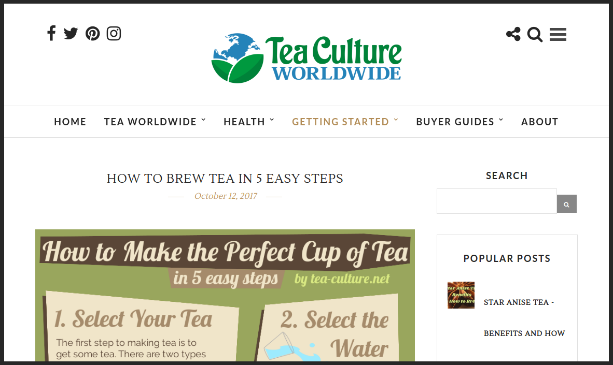

<!DOCTYPE html><html></html><head><title>Brian - Projects</title><meta name="viewport" content="width=device-width, initial-scale=1.0"><link href="https://fonts.googleapis.com/css?family=Source+Sans+Pro" rel="stylesheet"><!-- Google Analytics--><script>(function(i,s,o,g,r,a,m){i['GoogleAnalyticsObject']=r;i[r]=i[r]||function(){
(i[r].q=i[r].q||[]).push(arguments)},i[r].l=1*new Date();a=s.createElement(o),
m=s.getElementsByTagName(o)[0];a.async=1;a.src=g;m.parentNode.insertBefore(a,m)
})(window,document,'script','https://www.google-analytics.com/analytics.js','ga');
ga('create', 'UA-92261942-1', 'auto');
ga('send', 'pageview');
</script><link rel="stylesheet" type="text/css" href="css/app.css?version=1"><link rel="stylesheet" type="text/css" href="css/content-page.css?version=1"><link rel="stylesheet" type="text/css" href="css/projects.css?version=4"></head><body><div id="menu"><div id="menu-items"><div><a class="menu-item" id="home-button" href="/"><span class="menu-item-text">Home<div class="underline-slide"></div></span></a></div><div><a class="menu-item" href="projects"><span class="menu-item-text">Projects<div class="underline-slide"></div></span></a></div><div><a class="menu-item" id="playground-menu-item" href="playground"><span class="menu-item-text">Playground<div class="underline-slide"></div></span></a></div><div><a class="menu-item" href="about"><span class="menu-item-text">About<div class="underline-slide"></div></span></a></div></div></div><script>// Underline the current page based on what was passed to this mixin through the selected parameter
var currentPage = "Projects"
var menuItems = document.getElementsByClassName("menu-item-text")
for (var i = 0; i < menuItems.length; i++) {
  if (menuItems[i].textContent.toLowerCase() == currentPage.toLowerCase()) {
    // Set the underline to full width
    menuItems[i].childNodes[1].setAttribute("style", "width: 100%")
  }
}
</script><div id="container"><div id="main"><div id="content"><div id="table-of-contents"><div id="toc-container"><a class="toc-item" href="#deep-crypto-trader">Deep Cryptocurrency Trader (2018)</a><a class="toc-item" href="#amazon-scraper">Amazon Scraper (2018)</a><a class="toc-item" href="#tea-culture">Affiliate Site - tea-culture.net (2017)</a><a class="toc-item" href="#this-website">This Website (2017)</a><a class="toc-item" href="#billiards">Billiards (2015)</a><a class="toc-item" href="#android-rc-car">Android RC Car (2014)</a><a class="toc-item" href="#hackathon-game">Hackathon Educational Game (2013)</a><a class="toc-item" href="#kineticraft">Kineticraft.net (2013)</a></div></div><div id="intro"><p>If you are a potential employer or collaborator, please contact me by email for code samples.</p></div><div class="project-pane"><span class="internal-link" id="deep-crypto-trader"></span><h1 class="project-title-text">Deep Cryptocurrency Trader (2018)</h1><div class="project-text"><p>Both neural networks and cryptocurrency have fascinated me for a long time. The more I read about neural networks, the more I began to realize they might be well suited for quantitiative analysis. Particularly LSTM neural networks for temporal analysis and convolutional networks to recognize patterns at different temporal resolutions.</p><p>There is an open source cryptocurrency trading platform called <a href="https://gekko.wizb.it/" target="_blank">Gekko</a> that pulls data from crypto exchanges, makes it easy to execute trades on different exchanges, and allows for basic trading strategies.</p><p>I'm currently working on a tool to extend Gekko and allow for a neural network trading algorithm. So far, I have a separate Python program that pulls data from the Gekko database, formats the data using <a href='http://www.numpy.org/', target="_blank">numpy</a> and <a href='https://pandas.pydata.org/', target="_blank">pandas</a>, runs it through a prediction model powered by <a href='https://keras.io/', target="_blank">keras</a> and <a href='https://www.tensorflow.org/', target="_blank">tensorflow</a>, and plots the predictions against the actual data using <a href='https://matplotlib.org/', target="_blank">matplotlib</a>, as seen in the above image. The project also uses a <a href='https://github.com/toml-lang/toml', target="_blank">TOML</a> config file, which I found refreshingly simple and easy to read.</p><p>The Python program currently supports the following predictive models: Bi-directional LSTM, Simple Lag Model, Momentum Model, Single Point Random Walk, "Full Interval" Random Walk, Auto Regressive, and ARIMA. The next steps are to experiment with new neural network configurations, and to hook up the predictive engine with Gekko and experiment with paper trading.</p><p class="last">This project is suspended until I get more time to work on it.</p></div></div><div class="project-pane"><span class="internal-link" id="amazon-scraper"></span><h1 class="project-title-text">Amazon Scraper (2018)</h1><div class="project-text"><p>After my initial success with the <a href='https://tea-culture.net', target="_blank">tea-culture.net</a> affiliate site, I began looking for ways to expand to new websites. Since Amazon pays different affiliate rates for different categories, and since the tea market is small and potentially oversaturated, I needed a tool that would help me find high commision, large, undersaturated markets.</p><p class="last">To help me, I programmed a C# tool that crawls over thousands of different product categories on Amazon. It looks at the 20 best selling items in that category and records the price and number of reviews (to get a proportional estimate of # of units sold). The program utilizes an HTML parsing library called <a href="https://html-agility-pack.net/" target="_blank">HTML Agility Pack</a>. There is also custom logic to help prevent detection as a bot, and bypass CAPCHAs if they occur.</p></div></div><div class="project-pane"><span class="internal-link" id="tea-culture"></span><h1 class="project-title-text">Affiliate Site - tea-culture.net (2017)</h1><div class="project-picture-container"><div class="hovereffect"><div class="project-picture-overlay"><a class="hover-link" href="https://tea-culture.net" target="_blank">View Project</a></div></div></div><div class="project-text"><p>I created <a href='https://tea-culture.net', target="_blank">tea-culture.net</a> as a way to generate passive income. The site nets about $200 to $250 a month with minimal upkeep. Revenue is generated primarily through review articles. I find a type of product people are interested in buying, like "tea infuser bottles", and I write a comprehensive review of the products on the market. Within the article, I link back to Amazon. If they buy that product, Amazon gives me a commission of between 2-10% depending on the market.</p><p class="last">The site is entirely Wordpress and didn't require much coding other than a few CSS and PHP modifications. It's hosted on the same server as this website, utilizing a Debian, Nginx, PHP, and MySql stack. All web files and SQL data are backed up nightly by a custom script. Every article with the exception of 1 or 2 is written and researched by me.</p></div></div><div class="project-pane"><span class="internal-link" id="this-website"></span><h1 class="project-title-text">This Website (2017)</h1><div class="project-text"><p>View the code for this website over on <a href="https://github.com/Shloosh/PersonalWebsite" target="_blank">github</a>.</p><p>While working at my last job, I wanted a place I could experiment with new tech, share any projects I was working on, and potentially blog. After experimenting with a couple over-ambitious and under-performing designs, I created the site you see here. Some modifications have been made over time as the site is a constant work in progress.</p><p class="last">The website is programmed in Node.js. I use <a href="https://pugjs.org/api/getting-started.html" target="_blank">pug</a> for html templating and <a href="https://sass-lang.com/" target="_blank">Sass</a> for CSS templating. Since there is little-to-no state change in the app, I'm not using Vue.js or React. The project automatically recompiles when files are altered, and there are easy functions to publish the site to my web server. On the back-end, the web server uses <a href="http://pm2.keymetrics.io/" target="_blank">pm2</a> to run the website.</p></div></div><div class="project-pane"><span class="internal-link" id="billiards"></span><h1 class="project-title-text">Billiards (2015)</h1><div class="project-picture-container"><div class="hovereffect"><div class="project-picture-overlay"><a class="hover-link" href="https://billiards.brianschmoker.com" target="_blank">View Project</a></div></div></div><div class="project-text"><p>One of the first programming environments I ever used was called <a href="https://processing.org/" target="_blank">Processing</a>. It added a graphics library to Java and simplified the animation loop a bit. Using Processing, I got really into simulating physics and billiards seemed like a cool way to put that into practice. I also have a cool box program build with a physics framework called <a href="http://box2d.org/" target="_blank">Box2D</a>. I'll put it up on here if I find it.</p><p>No physics library was used for this because I wanted to experiment with the basics of physics simulation. The result is pretty realistic, although the ball collisions don't work very well at high speeds. Also, ball rotation is partially broken, but I'm glad I got it working at all.</p><p class="last">This was originally programmed in Java, but Processing has a port tool that allowed me to convert the program into Javascirpt (Processing.js) and host it on the web.</p></div></div><div class="project-pane"><span class="internal-link" id="android-rc-car"></span><h1 class="project-title-text">Android RC Car (2014)</h1><div class="project-text"><p>In my senior year of high school we had a class called Senior Design. Each student had to create an engineering project. For my project, I made an Android controlled RC car. My vision was to have the accelerometers in a mobile phone sending Bluetooth signals to an RC car. When you tilted the phone forward or backward, the car would move forward or backward. When you tilted left or right, the car would turn.</p><p class="last">We used an Arduino microcontroller to receive Bluetooth from a phone and control the car. I programmed a basic Android app and was able to use some sliders to control the car, but I didn't have enough time to implement accelerometer control.</p></div></div><div class="project-pane"><span class="internal-link" id="hackathon-game"></span><h1 class="project-title-text">Hackathon Educational Game (2013)</h1><div class="project-text"><p class="last">This project won my team and I first place ($1000 prize) at a student Hackathon in 2013. The goal was to design an app/website/etc that would benefit the local community. After some brainstorming, we decided to make an educational game. We used <a href="https://processing.org/" target="_blank">Processing</a> to code the game because we all had experience with it. One of the students created the game engine, I programmed the animation, and our teammates helped create the levels and graphics.</p></div></div><div class="project-pane"><span class="internal-link" id="kineticraft"></span><h1 class="project-title-text">Kineticraft.net (2013)</h1><div class="project-picture-container"><div class="hovereffect"><div class="project-picture-overlay"><a class="hover-link" href="https://kineticraft.brianschmoker.com" target="_blank">View Project</a></div></div></div><div class="project-text"><p>I used to run a vanilla Minecraft server with a few friends. When we realized we needed a website to garner more attention, I took it upon myself to create one. I could have just used some Wordpress template, but I had a specific idea of how I wanted it to look that only custom code could create.</p><p>This website was the result. It was the first website I ever built and was hand coded in html, css, and php. I'm proud of the design, although my color selection could have been a bit better. The code isn't very pretty, but it get's the job done.</p><p>The server is still running today. I gave the domain away to a few dedicated staff. They have since updated the website to a <a href="https://github.com/flarum/flarum" target="_blank">Flarum</a> template. If you play Minecraft, pay them a visit. Tell them ThunderBird21 sent you.</p></div></div></div></div><div id="footer"><ul><li><a class="footer-item" href="/">Home</a></li><li><a class="footer-item" href="projects">Projects</a></li><li><a class="footer-item" id="playground-footer-item" href="playground">Playground</a></li><li><a class="footer-item" href="about">About</a></li><li class="footer-item" id="copyright">Copyright © 2018<!-- Set the copyright to the current year via javascript--><script>document.getElementById("copyright").textContent = "Copyright © " +  (new Date()).getFullYear()</script></li></ul></div></div></body>